TECHVESTVENTURES DAILY RISK ALERTS — Emergent News Digest — Nov 15, 2026, 10:00 AM EST ALL RISK REPORTS click TVV Risk Center
TVV RESEARCH DIGEST — November 15, 2026 — 12 desks
1. Major Geopolitical Conflict Developments
- ★ Gulf war widens (conflicting claims, screen skeptically): sirens sounded in Bahrain on Sunday for the first time since September after Iran's Revolutionary Guards said they hit a US radar system there with drones, the second Iranian attack on Bahrain in three days; Bahrain says it shot the drones down. The UK Maritime Trade Operations agency reports a tanker attacked in the Gulf while heading for Hormuz, crew safe. Iran's IRGC Navy separately claims two more tankers hit mines south of the strait; there is no independent confirmation. Iran's foreign minister travels to Oman for talks on Tuesday. The New Arab · Iran International · The National
- ★ Second chokepoint: Saudi-backed Yemeni government forces say they are pulling back from Dhubab and the area overlooking the Bab el-Mandeb Strait, leaving the Houthis in control of the high ground over the Red Sea route to Suez. The Saudi-led coalition intercepted two Houthi ballistic missiles fired at Riyadh and three drones over the Eastern Province. Implication: with Iran disrupting Hormuz, both sea exits for Gulf oil now sit within reach of Iran and its allies. Iran International / Reuters · The New Arab · Middle East Eye
- ★ Ukraine: Russia launched 132 long-range drones overnight, 78 of them jet-powered, hitting energy sites in five regions; about 41,000 families in Odesa Oblast lost power, and attacks killed 4 and injured 69 across Ukraine over the past day. Ukraine struck the Nizhnekamskneftekhim petrochemical plant in Tatarstan and the Monolit helicopter-parts plant in Bryansk. Zelenskyy says SpaceX speed limits on Starshield, in place five days, cut off interceptor drones above 161 km/h (100 mph). Kyiv Independent · The Independent · RBC-Ukraine
- ★ Shenzhen: the Kremlin says Putin, Xi and Trump will meet on Nov 19, but Reuters reports there is still no agreed agenda or format and Beijing is wary of hosting: China resists arms-control framing and has kept Ukraine off the agenda, which Moscow wants. A senior US official says no nuclear agreement is expected. Polymarket gives 97% that Trump meets Putin this year, up from 79.5% in mid-October, and 97.5% that their next meeting is in China (see graph). Reuters · Anadolu · Polymarket · Polymarket
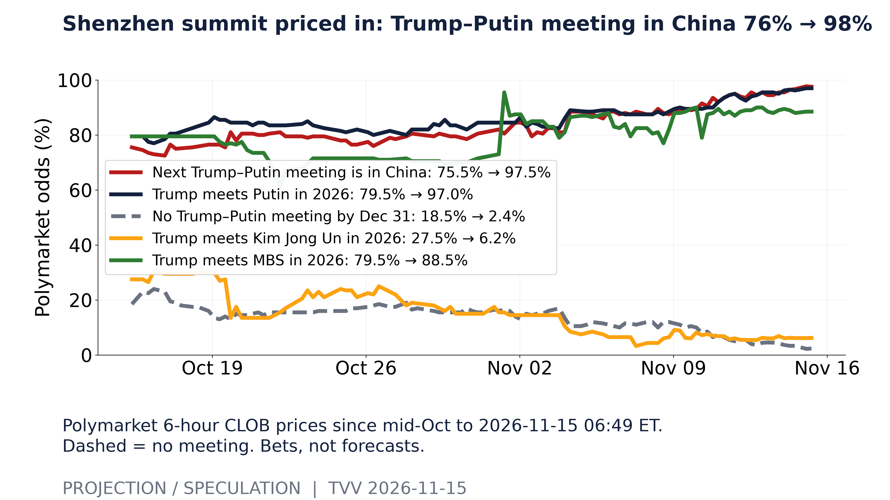
Shenzhen summit priced in: Trump–Putin meeting in China 76% → 98%. Polymarket 6-hour CLOB prices since mid-Oct to 2026-11-15 06:49 ET. Dashed = no meeting. Bets, not forecasts. [Projection/Speculation; data as of 2026-11-15 06:49 ET] Source: polymarket.com data page
2. Major Terror / Security Incidents
- ★ Niger: armed men killed at least 37 civilians in an ambush on villagers from Tillim travelling to the weekly market in Téra, Tillabéri region, on Thursday, local sources say (one outlet counts 38, including a wounded man who died the next day). The dead include 11 local self-defence members and seven women; no group has claimed it and there is no official toll. The Hindu / AFP · GSM Global
- ★ Syria: a bomb planted in a parked car killed a man and his daughter in Jaramana, a mainly Druze suburb of Damascus, on Saturday evening; the Interior Ministry reports one wounded, state TV two (conflicting counts). No one has claimed it; authorities have blamed recent Damascus bombings on ISIS cells. Al Jazeera · Profile News / AP
- ★ Nigeria: at least 53 people died in Zamfara state when village vigilantes ambushed a kidnapping gang on Thursday; residents say 44 bandits, including a commander known as Jijji, and nine vigilantes were killed. Police had no details yet. Daily Sabah / AFP
- ★ Cyber front door: network-edge vendors (Cisco, Fortinet, Ivanti, Palo Alto and others) account for 61 of the flaws CISA has confirmed as actively exploited in 2026, 21% of the year's additions, matching the 2024 high (see graph). Cisco leads with 21. Implication: firewalls and VPN gateways remain the first hop for state and ransomware intrusions. CISA KEV
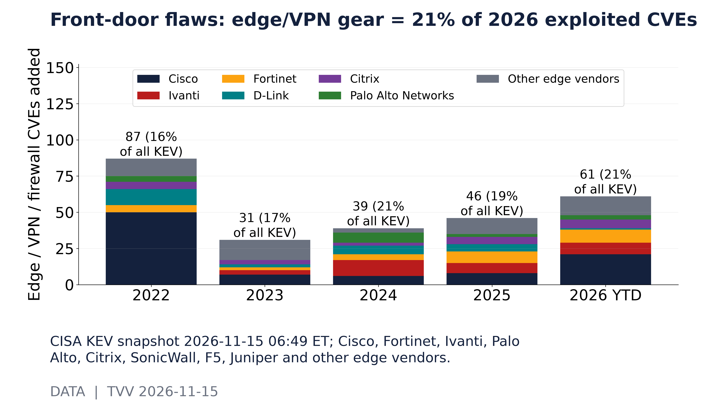
Front-door flaws: edge/VPN gear = 21% of 2026 exploited CVEs. CISA KEV snapshot 2026-11-15 06:49 ET; Cisco, Fortinet, Ivanti, Palo Alto, Citrix, SonicWall, F5, Juniper and other edge vendors. [Data; data as of 2026-11-15 06:49 ET] Source: cisa.gov data page
3. Earthquakes and Eruptions
- ★ No M6.0+ quake with casualties since the last issue; the largest were M5.5 events on the northern Mid-Atlantic Ridge on Saturday and in the Fiji region on Sunday, both remote. Polymarket gives 2.4% to an M9.0+ quake before 2027, about three times the 0.8% implied by the five M9s USGS lists since 1950 (see graph); bettors pay up for catastrophe tail risk. Quakewire · Quakewire · Polymarket · USGS
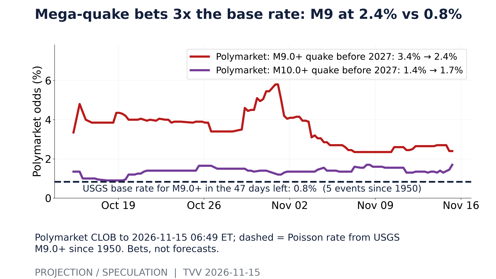
Mega-quake bets 3x the base rate: M9 at 2.4% vs 0.8%. Polymarket CLOB to 2026-11-15 06:49 ET; dashed = Poisson rate from USGS M9.0+ since 1950. Bets, not forecasts. [Projection/Speculation; data as of 2026-11-15 06:49 ET] Source: polymarket.com data page
4. Solar / Space Weather
- ★ Storm watch: NOAA expects minor (G1) geomagnetic storming on Tuesday, Nov 17, from a coronal-hole wind stream, with Kp peaking near 4.67; aurora is possible at high latitudes, with little risk to power grids or satellites. NOAA SWPC
- ★ Weekly pole map: magnetic north has drifted about 45 km a year over the last decade toward Siberia, slowing to 37 km in the latest step; NOAA's WMM2025 model projects about 33 km a year to 2030 (see graph; NOAA's historical positions are model estimates, not surveys). No one can predict the timing of a sudden geomagnetic shift. Michael Hentschel's own view: 2035 at the earliest, with critical earth changes along the way. Next weekly map: Nov 22. NOAA NCEI
- ★ Space access: SpaceX caught a Starship upper stage with its launch-tower arms after an orbital flight for the first time on Saturday, about 22.5 hours after Flight 15 launched; the Super Heavy booster was not recovered and splashed down in the Gulf of Mexico. Full reuse would cut launch costs for large satellite constellations. AP · Space.com
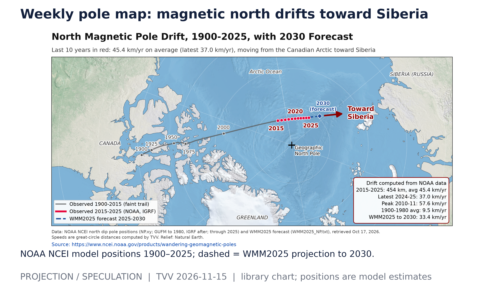
Weekly pole map: magnetic north drifts toward Siberia. NOAA historical models 1900–2025; WMM2025 projection to 2030 (dashed). Library chart, data retrieved Oct 17. [Projection/Speculation; data as of Historical 1900–2025; WMM2025 2025–2030] Source: ncei.noaa.gov data page
5. Critical Infrastructure / Transportation Disruptions
- ★ FAA cause and cost: Transportation Secretary Sean Duffy says Friday's nationwide ground stop, the longest since 9/11, followed a contractor upgrade by L3Harris, moving a remote line from copper to fiber, after which a router flooded the air traffic network with over 1,000 connection attempts every four to five seconds; the FAA is still determining whether the fault was installation error or faulty equipment. Airlines canceled more than 6,400 US flights Saturday after about 9,200 Friday. FAA chief Bryan Bedford expects full recovery by Sunday evening and sees no sign of sabotage. Friday delay counts differ (FlightAware via Reuters 7,500; NPR nearly 25,000). Reuters · CNBC · US DOT · NPR
- ★ Capex eats revenue: data-center spending reached 147% of revenue at Oracle in its August quarter and 53% at Meta, against 43% at Microsoft, 40% at Alphabet and 38% at Amazon in the third quarter, up from 10–19% in early 2022 (see graph). Implication: utility-like capital needs at software valuations, increasingly funded with bonds and leases. SEC EDGAR
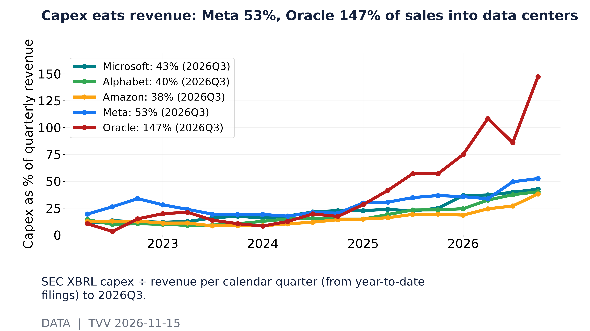
Capex eats revenue: Meta 53%, Oracle 147% of sales into data centers. SEC XBRL capex ÷ revenue per calendar quarter (from year-to-date filings) to 2026Q3. [Data; data as of 2026Q3] Source: data.sec.gov data page
6. Econo-Metrics
- ★ Bond market shrugs: the five-year breakeven inflation rate is 2.30% and the 5-year, 5-year forward 2.18%, well below October's 4.1% consumer inflation (see graph). Implication: traders read the expected December rate hike as credible enough to pull inflation back toward target. FRED
- ★ Hours cut before jobs: 4.84 million Americans worked part time for economic reasons in October, up from 4.59 million a year earlier and 33% above the June 2022 low of 3.65 million, while unemployment held at 4.1% (see graph). Employers trimming hours is an early sign of a softer labor market. BLS via FRED · BLS
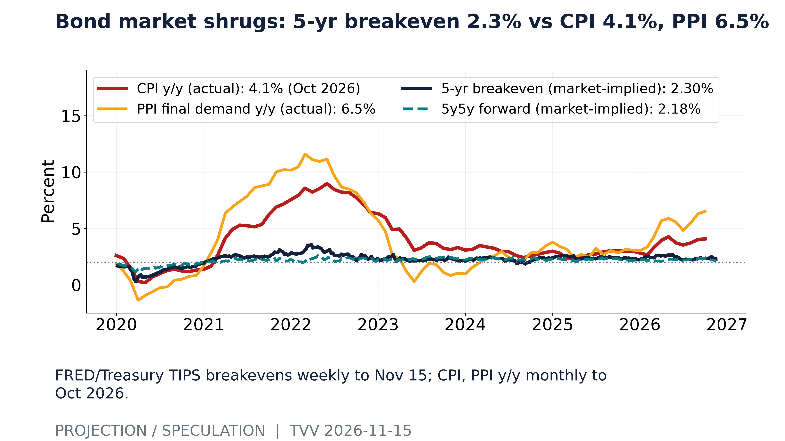
Bond market shrugs: 5-yr breakeven 2.3% vs CPI 4.1%, PPI 6.5%. FRED/Treasury TIPS breakevens weekly to Nov 15; CPI, PPI y/y monthly to Oct 2026. [Projection/Speculation; data as of 2026-11-15] Source: fred.stlouisfed.org data page
7. Epidemic / Bio-Metrics
- ★ Ebola, DR Congo: WHO has verified 81 attacks on health facilities since the outbreak began six months ago, and says more than 1,000 contacts of patients have been lost to follow-up and three confirmed cases cannot be traced. An armed attack the previous week killed 66 civilians, including three health workers. The response chief expects control "in the coming months"; an outbreak ends only after 42 days without a new case. Polymarket's Ebola-pandemic-in-2026 odds halved from 2.1% to 1.1% since mid-October (see graph). DNE Africa / WHO briefing · Polymarket
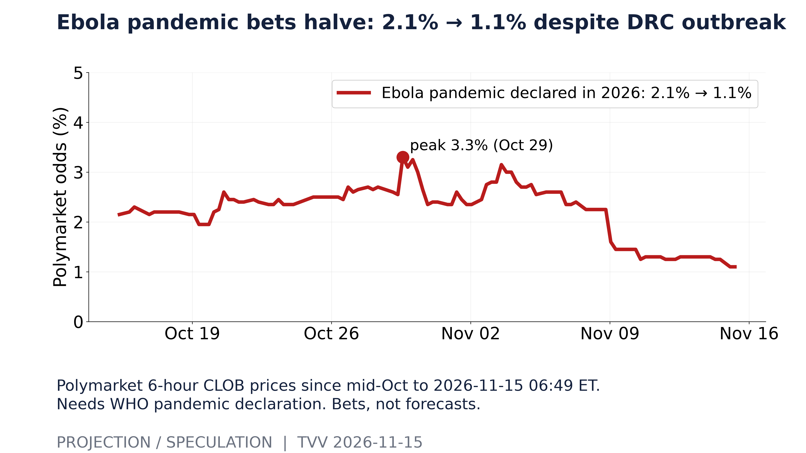
Ebola pandemic bets halve: 2.1% → 1.1% despite DRC outbreak. Polymarket 6-hour CLOB prices since mid-Oct to 2026-11-15 06:49 ET. Needs WHO pandemic declaration. Bets, not forecasts. [Projection/Speculation; data as of 2026-11-15 06:49 ET] Source: polymarket.com data page
8. Gold and Silver and Commodities
- ★ Fuel shipping: the US extended the Jones Act waiver for another 90 days from Nov 16, letting approved foreign-flag tankers carry fuel and fertilizer between US ports; covered cargo must load by Feb 14, 2027. Refined fuels lead commodities this year: heating oil +101%, gasoline +52% and WTI crude +54%, while natural gas is −12%, gold −10% and coffee −20% (see graph). Analysts see Brent testing $90–92 next week as inventories build. Seatrade Maritime · US CBP · CNBC-TV18 · Yahoo Finance
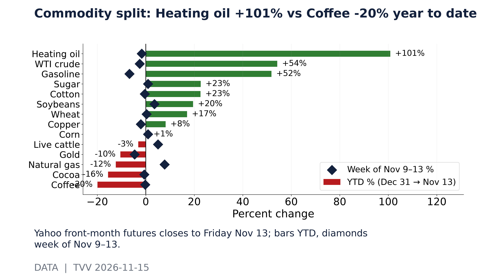
Commodity split: Heating oil +101% vs Coffee -20% year to date. Yahoo front-month futures closes to Friday Nov 13; bars YTD, diamonds week of Nov 9–13. [Data; data as of 2026-11-13] Source: query1.finance.yahoo.com data page
9. Stock Averages and Nasdaq Major Movers
- ★ Weekly tape (Nov 9–13): energy led with +5.4%, semiconductors (SMH) +4.9% despite Friday's selloff and industrials +3.8%; Bitcoin −15.3%, gold −4.6% and long Treasuries (TLT) −3.1% lagged (see graph). Friday's biggest Nasdaq losers: Nebius −9.9%, AMD −8.8%, Dell −7.2%, Cisco −6.2% and CoreWeave −6.1%. Week ahead: Nvidia results Tuesday, Anthropic pricing Wednesday, Shenzhen summit Thursday. Yahoo Finance · Investing.com
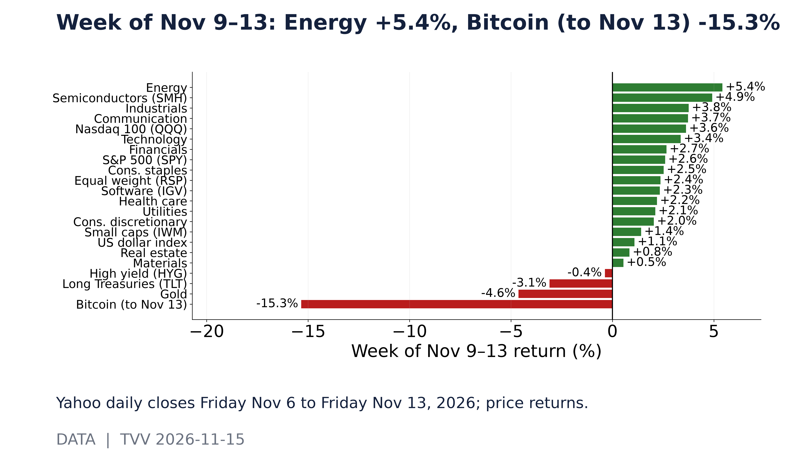
Week of Nov 9–13: Energy +5.4%, Bitcoin (to Nov 13) -15.3%. Yahoo daily closes Friday Nov 6 to Friday Nov 13, 2026; price returns. [Data; data as of 2026-11-13] Source: query1.finance.yahoo.com data page
10. Polymarket and Kalshi Sentiment Highlights
- ★ Crypto bet settles: Bitcoin fell to a four-month low over the weekend (Investing.com: $62,112; other trackers: about $61,956), so Polymarket's 'dips to $65,000 in 2026' market resolved yes. The $60,000 dip is now 57.5%, up from 46% Friday, and $55,000 is 28.5%. About $2 billion of crypto positions were liquidated in 24 hours, and US spot Bitcoin funds lost nearly $3 billion from Oct 30 to Nov 13. Investing.com · CryptoTicker · Polymarket
- ★ Iran war bets fade despite the Bahrain strikes: Polymarket's US-invades-Iran-before-2027 odds fell from 16.5% in mid-October to 7.5% ($80 million traded), while the Israel–Iran ceasefire holding through Dec 31 rose from 50.5% to 67.5%; a US–Iran Hormuz deal slipped from 30.5% to 16.5% (see graph). Implication: bettors expect a grinding standoff, not escalation or a deal. Polymarket · Polymarket · Polymarket
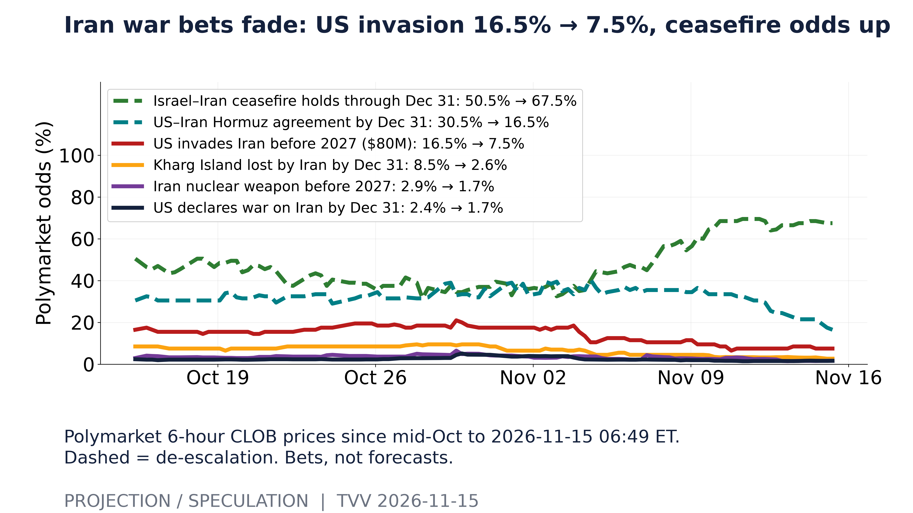
Iran war bets fade: US invasion 16.5% → 7.5%, ceasefire odds up. Polymarket 6-hour CLOB prices since mid-Oct to 2026-11-15 06:49 ET. Dashed = de-escalation. Bets, not forecasts. [Projection/Speculation; data as of 2026-11-15 06:49 ET] Source: polymarket.com data page
11. Tech-Metrics
- ★ Nvidia leadership: Altimeter's Brad Gerstner and Atreides' Gavin Baker, both major shareholders, urged the board in a signed letter to run a "slow, measured, and deliberate" CEO search and to consider Jensen Huang's return. A petition for Huang's reinstatement passed 108,000 signatures, and the stock has fallen six weeks in a row, its longest losing streak since 2012. Polymarket's odds that Huang rejoins Nvidia by Dec 31 rose from 4.6% to 10.2% in a thin new market (see graph). Interim CEO Colette Kress leads Tuesday's results and Wednesday's staff meeting. NDTV Profit · Global Times, citing Business Insider and Reuters · Manila Times · Polymarket
- ★ What to watch Tuesday: Nvidia held $31.6 billion of inventory at the end of its July quarter, about 30 days of sales on $96.2 billion revenue, double a year earlier but the same days-of-sales ratio (see graph). Rising days of sales on Nov 17 would flag cooling demand; the 2023 glut peaked at 78 days. SEC EDGAR · Nvidia IR
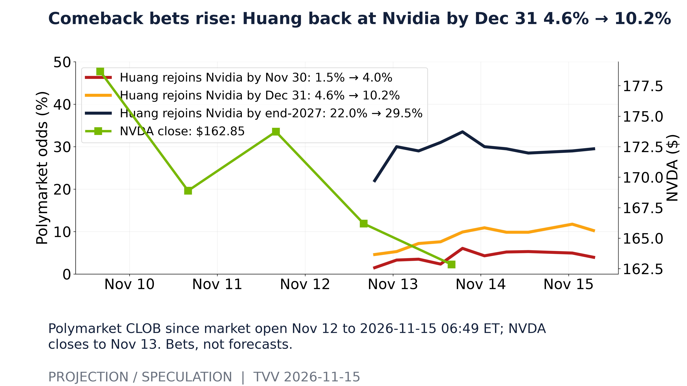
Comeback bets rise: Huang back at Nvidia by Dec 31 4.6% → 10.2%. Polymarket CLOB since market open Nov 12 to 2026-11-15 06:49 ET; NVDA closes to Nov 13. Bets, not forecasts. [Projection/Speculation; data as of 2026-11-15 06:49 ET] Source: polymarket.com data page
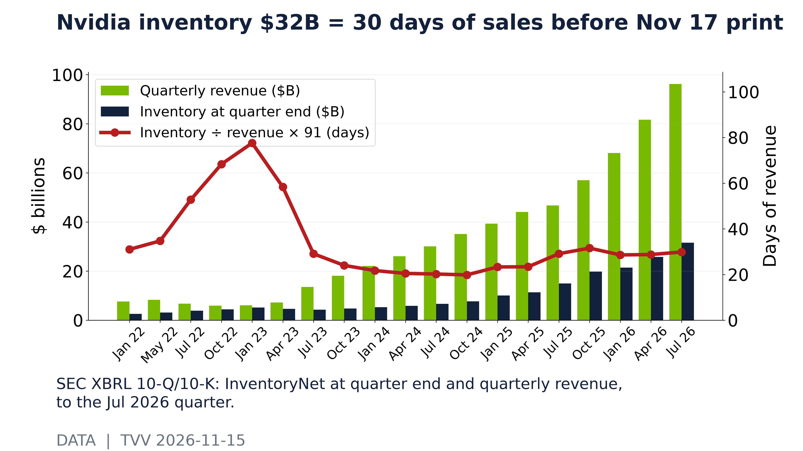
Nvidia inventory $32B = 30 days of sales before Nov 17 print. SEC XBRL 10-Q/10-K: InventoryNet at quarter end and quarterly revenue, to the Jul 2026 quarter. [Data; data as of 2026-07-26] Source: data.sec.gov data page
12. AI Hypergrowth Risks
- ★ Anthropic IPO: orders reached about six times the shares on offer by Friday, up from about two times on day one, Reuters reports, with bankers expecting the book to grow before Wednesday's pricing; investors still question how durable its AI lead is. Google launched Gemini 4 Hydrogen, a faster, cheaper model for coding and agents, and OpenAI introduced ChatGPT Wallet, letting approved agents make purchases. Investing.com / Reuters · Times of India · ETV Bharat · AI Opportunity Daily
- ★ AI math bets: Polymarket gives 47% that OpenAI announces another Millennium Prize problem solution by end-2027 but only 7.8% by Dec 31, down from 14.5% in mid-October, and 85.5% that AI solves no more this year (see graph). These markets settle on announcements; Clay Institute verification takes years. Polymarket · Polymarket
Prioritized Risk Summary November 15, 2026
| Sections Ranked for Importance Today | |
|---|---|
| GEOPOL | Iran hits Bahrain again; Houthis gain Bab el-Mandeb ground |
| TERROR | Ambush near Téra, Niger, kills at least 37 civilians |
| HEALTH | WHO verifies 81 attacks on Congo Ebola health sites |
| COMMODITY | Jones Act fuel waiver extended; heating oil +101% this year |
| AI BOOST | Anthropic IPO orders reach six times the shares offered |
| STOCKS | Energy leads the week, +5.4%; AMD falls 8.8% Friday |
| ODDS | Bitcoin breaks $65,000; $60,000-dip odds rise to 57.5% |
| TECH | Investors urge slow Nvidia CEO search before Nov 17 results |
| ECONOMY | Involuntary part-time work 4.8 million, up a third since 2022 |
| INFRA | FAA blames contractor router; flights to recover Sunday |
| SPACE | Minor G1 storm expected Nov 17; Starship caught from orbit |
| QUAKES | No damaging M6+ quake; M9 bets run 3x the base rate |
TECHVESTVENTURES ACTION-ALERT — November 15, 2026 see all graphs click TVV Risk Center
EDITOR — Michael Hentschel
Most news events require or spawn no action or reaction, some (but not many) are or become warnings. We draw attention to substantial lifestyle risks and market risks in particular, some created by Mid-Term Vote anxieties, Middle East tensions, vast over-indebtedness globally, and other events we track. Longer term but capable of causing sudden power surges as serious as the Carrington Event. Climate instability occasioned by long-term cyclical solar electro-magnetic flares, is becoming much more prominent and even more likely. New AI predictive analytics and pattern seekers are pointed in some of these directions, and we monitor imminent likelihood. Some readers might hedge and others might see opportunity. The above is not investment advice.